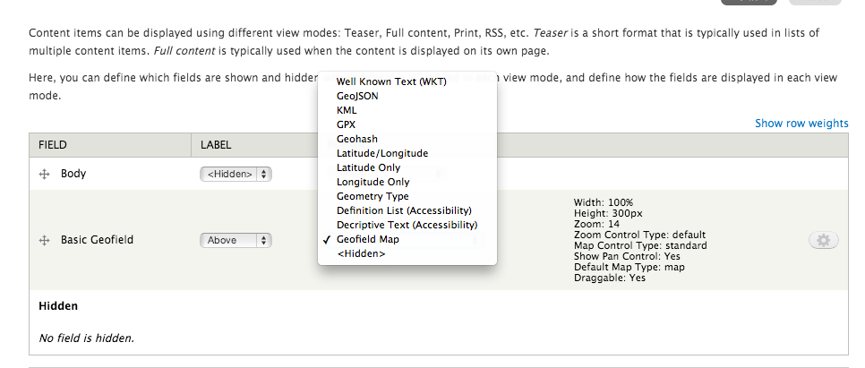
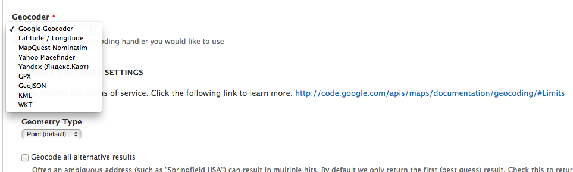

Checking in with Mapping in Drupal 7
Online Edition
Meet John Snow and Henry Whitehead
Problem: I need to store location/mapping information.
Text Formatters

Problem: I need to convert my real-world data into something a computer can understand.
Providers

Problem: I need to get my data out of Drupal into another system, pronto.
Problem: I need to put my data on a map.
Problem: I need to put my data on a map, like a boss.
Problem: I need to display static or near-static information on a map.
Problem: I need to be able to filter/analyze/interact with my geospatial data online.
How Can I Help?